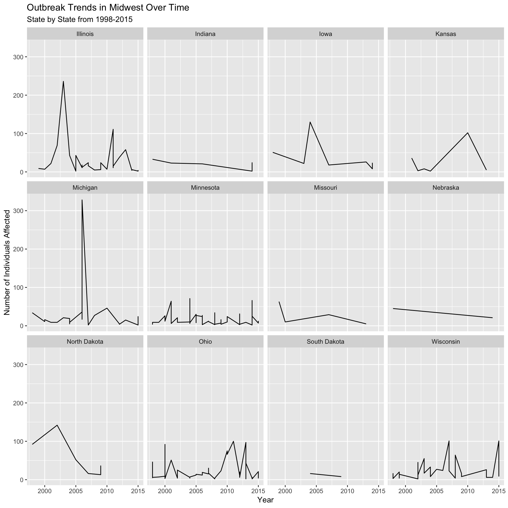
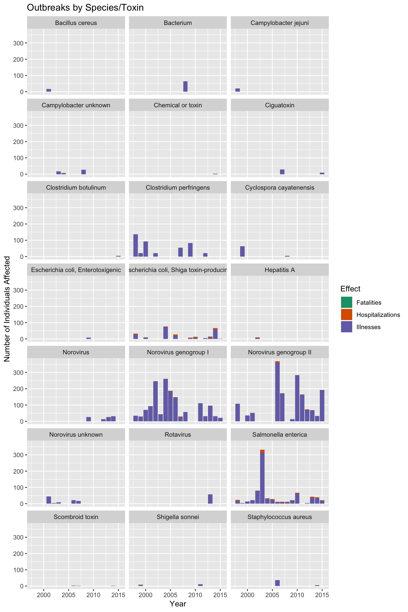

library(tidyverse)
library(readr)
food_outbreaks <- read.csv("outbreaks.csv")
food_outbreaks <- food_outbreaks %>%
filter(State == c("Illinois", "Indiana", "Iowa", "Kansas", "Michigan", "Minnesota","Missouri","Nebraska","North Dakota","Ohio","South Dakota","Wisconsin")) %>%
#select only information we are interested in
select(State, Year, Month, Status, Illnesses, Hospitalizations,
Fatalities, Species ) %>%
#filter for incidents with confirmed status
filter(Status == "Confirmed")
#replace all the n/a entries with a value of 0
food_outbreaks[is.na(food_outbreaks)] <- 0
# food_ outbreaks_tidy
food_outbreaks_tidy <- food_outbreaks %>%
group_by(State, Year, Illnesses, Hospitalizations, Fatalities)%>%
mutate(Total = Illnesses + Hospitalizations + Fatalities) %>%
gather(Effect, Cases, c("Illnesses", "Hospitalizations", "Fatalities")) %>%
select(State, Year, Species, Effect, Cases, Total)
#line graph of outbreaks over time by State
ggplot(data = food_outbreaks_tidy, mapping = aes(x = Year, y = Total)) +
geom_line() + facet_wrap(~State, nrow = 3) + labs(x = "Year", y="Number of Individuals Affected", title = "Outbreak Trends in Midwest Over Time", subtitle = "State by State from 1998-2015") This line graph shows the number of individuals affected by foodborne diseases in the Midwest from 1998 to 2015. The total number of affected individuals over the years varies by state. If we focus on the number of individuals affected by the outbreaks, we can see that Illinois has more variability compared to Indiana. We speculate that this may be due to factors not accounted for in the data. We can also observe outbreaks in certain years by a hike in the number of individuals affected in states such as Michigan. The number of outbreaks and the number of individuals affected may be due to factors such as policy enforcement, population density, and socioeconomic status rather than only federal safety standards and population size. This may account for the variability observed from state to state, as we see that even though some states have nearly the same number of affected individuals, they vary on the rate of outbreaks from year to year, for example, Indiana and Minnesota have similar numbers of affected individuals but Minnesota has more variability than Indianna.
#Seperate by Species info
by_species <- food_outbreaks_tidy %>%
group_by(Year, Species, Effect) %>% summarise(Total= sum(Cases))
#Plot by species and effect
ggplot(data = by_species, mapping = aes(x = Year, y= Total, fill = Effect)) +
geom_col() + scale_fill_brewer(palette="Dark2") +
facet_wrap(~Species, nrow = 7) + labs(x = "Year", y="Number of Individuals Affected", title = "Outbreaks by Species/Toxin")
Our final graph shows the type of species involved in these outbreaks and their effects on the Midwest states. Grouping the number of cases of outbreaks in these states by species shows that certain species have been more prevalent during certain periods of time. Some species have higher outbreak effects compared to the others, for example, Norovirus genotype II has higher infection numbers than Hepatitis A. Some agents are bacterial while other are viral, and a few outbreaks are due to chemical contaminations. The data also show that certain species are more serious, as they are associated with more hospitalizations (Noroviruses and Salmonella), though there was only one confirmed fatality in the Midwest over this period (a shiga toxin-producing Escherichia coli case).
This implies that some species more infectious than others in a food related setting. The rise in infection rate of certain species could also be linked to either mutations within the species that lead to higher pathogenicity, or environmental factors such as food safety practices.
According to the Centers of Diseases and Control (CDC), Salmonella virus causes about 1.2 million illnesses, 23,000 hospitalizations and 450 deaths in the United States every year and food is the main source of these illnesses. Our data show that noroviruses and salmonella are the most frequent agents in the midwest that cause foodborne diseases. The trends of these three virus show that they are more prevalent than others. Therefore, our data is consistent with the CDC statistics, which claim that salmonella is one of the most deadly virus for foodborne diseases.
While number of people affected by food outbreaks remains fairly steady and is slightly decreasing in the Midwest, there may be factors that increase the risk of getting infected, such as the species of an outbreak or the residence state. There are many more factors that could be explored, such as whether diet or socioeconomic status put you more at risk for infection.
References:
Centers For Disease Control and Prevention. Foodborne Disease Outbreaks,1998-2015. Web.19 December, 2018.1